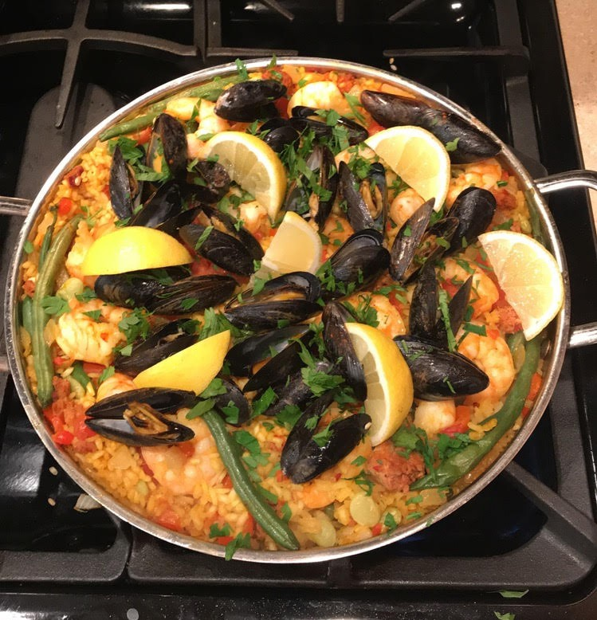

This is a dish I made for my birthday about a month ago. You can find the recipe here. There's just a couple of things that I did differently. I added some smoked paprika, fresh lemon, and instead of dried chorizo I used fresh ground chorizo. Also, I opted for fresh green beans and lima beans instead of peas. You can find fresh seafood at Dixon's in Peoria and homemade chorizo at a nearby mexican grocery store.